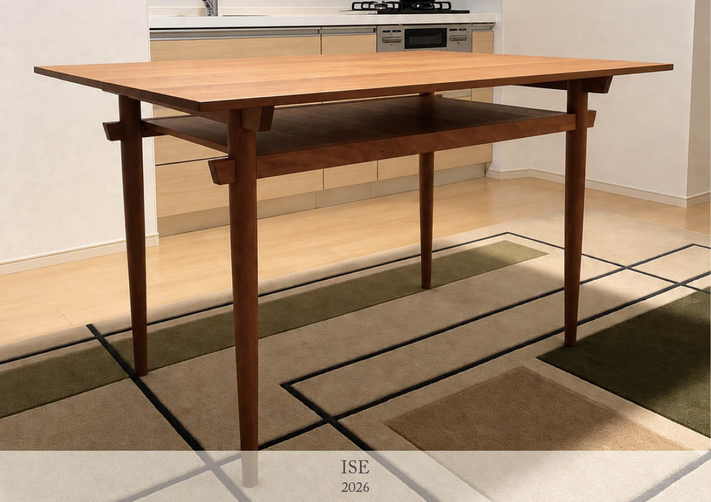
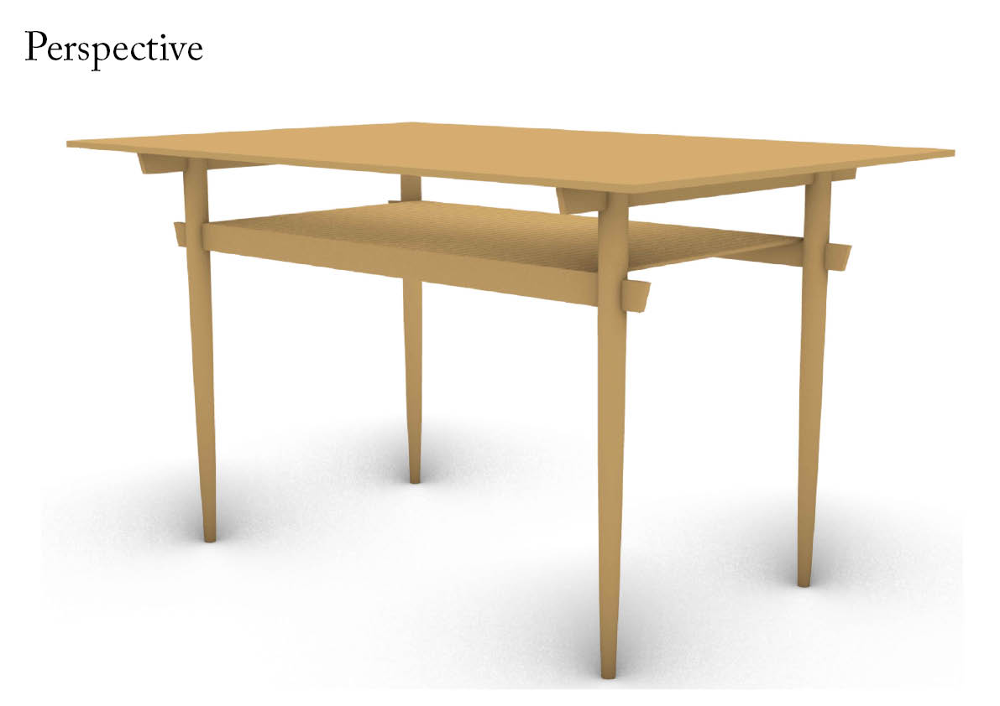
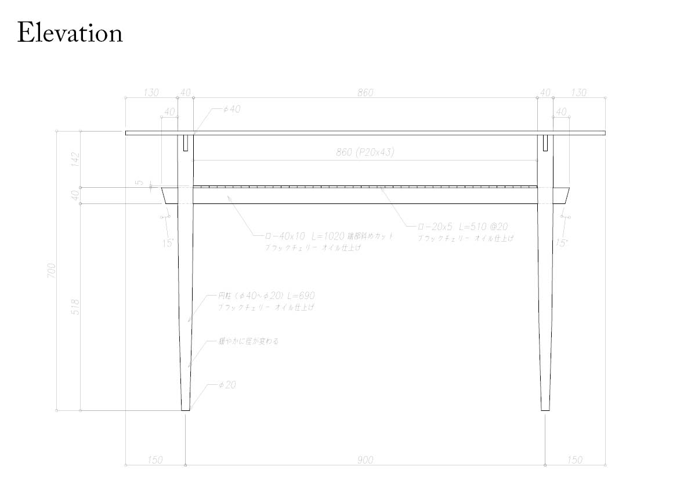
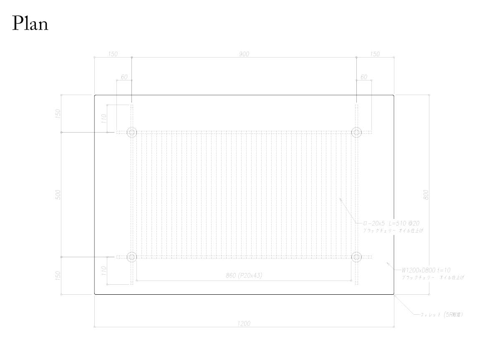
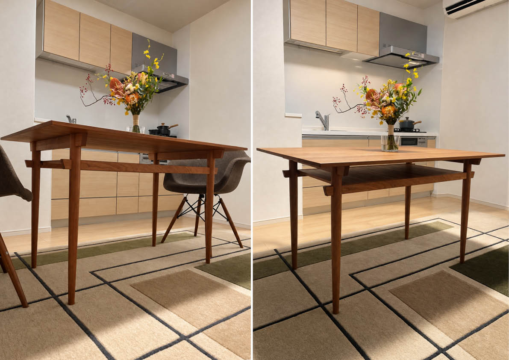

本作品は、天板下に書類などを収納できる棚を組み込んだ、スリムなフォルムのダイニングテーブルである。素材にはブラックチェリーの無垢材を使用し、木の色味や木目を生かすオリオ2塗装で仕上げている。無垢材の反りや伸縮を考慮しながら各部の寸法と接合方法を決定し、細身の部材でありながら安定した構成としている。構造には、貫構造や実（さね）加工など、日本建築や伝統的な木工に見られる接合方法を取り入れている。脚の間を通る貫によってテーブル全体を支えるとともに、天板下の棚板は床板のように実加工で組み合わせることで、無垢材の反りや伸縮に対応している。また、天板の縁には緩やかなテーパーを設け、必要な板厚を確保しながらも、正面や斜めから見た際には薄く見えるように仕上げている。収納という日常的な機能を組み込みながら、無垢材の性質と日本的な木組みを生かすことで、細く軽やかな佇まいを実現したダイニングテーブルである。
project
ISE
term
Aug. 2026 - Sep. 2026
type
Furniture
credit
Designed by Hiroki Awaji
Fabricated by KOSAKA CRAFT